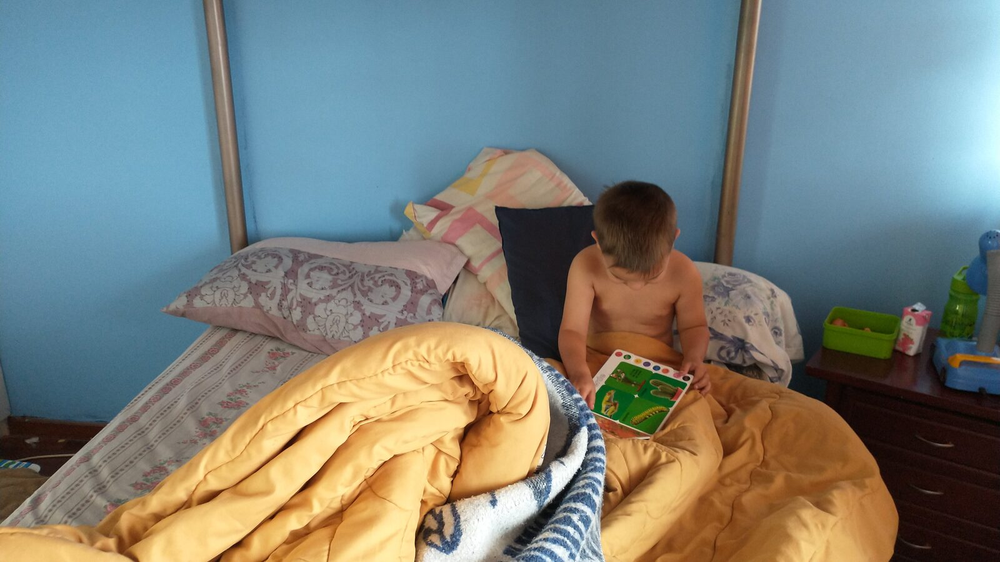

Housing for Nonverbal Autistic Adults With High Support Needs
What families should look for when an adult needs continuous supervision, communication support, personal care, and a home able to adapt across a lifetime.

Families searching for housing for a nonverbal autistic adult are rarely asking only where that person will sleep. They are asking who will notice pain, understand refusal, prevent wandering, support communication, help with personal care, and remain present when parents can no longer provide every layer of support.
The answer cannot be chosen by diagnosis alone. Autism includes people with very different communication styles, intellectual abilities, medical needs, sensory profiles, safety risks, and preferences. Some adults may need help only at scheduled times. Others may need access to responsible support at every hour of the day and night.
For adults with high support needs, housing has to be evaluated as an entire care system: the home itself, the people who staff it, the way communication is understood, the safeguards that operate quietly in the background, and the organization's ability to keep its promises as residents and caregivers age.
What research tells us about housing preferences and unmet need
Research does not point to one residential model that is best for every autistic adult. It does show that preferences differ according to support needs. In a European survey involving 2,009 autistic adults, caregivers, and professionals, autistic adults and caregivers of more independent adults most often preferred help in the person's own home. Caregivers of adults with lower independence most often preferred a full-time residential setting. The same study found that fewer than half of autistic adult respondents experienced five of seven recommended residential-service features. Read the study by Micai and colleagues.
A statewide study of autistic adults waiting for Medicaid home- and community-based services found substantial unmet needs: 63.6% reported unmet functional-skills needs, 62.1% reported unmet employment or vocational needs, and 52.8% reported unmet mental or behavioral health needs. Read the study by Schott, Nonnemacher, and Shea. Those numbers are not a blueprint for one kind of housing, but they are a warning: a bed without reliable services does not solve the problem.
Research on profound autism is also limited. A 2024 study of caregiver perspectives noted that people with profound autism, defined in that paper as requiring access to round-the-clock care, remain underrepresented in autism research. That lack of evidence is itself important when families encounter confident claims that one program or philosophy fits everyone. Read the study by Ferguson and colleagues.
A building is not the same as a home
A safe address is necessary, but it is not enough. A real home offers familiarity, privacy, rest, ordinary routines, and people who know what helps the resident feel secure. This matters especially for adults who may not be able to explain that a room is too loud, a caregiver feels unfamiliar, a food texture is wrong, or a routine has changed in a way that creates distress.
We spent six months living in a townhouse Airbnb in historic Quito, Ecuador. The room in the photograph became familiar through repetition: the same bed, the same belongings, the same place to look at books, and the same household rhythms. It was temporary housing, but it still became home for that season.
Good lifelong housing should offer that sense of being settled with far greater stability. A resident should not be expected to keep adapting to new rooms, unfamiliar staff, and shifting rules simply because their care is complex.
Nonverbal communication must be treated as communication
Nonverbal does not mean that a person has no opinions, preferences, refusals, or inner life. A resident may communicate through gestures, facial expression, movement, sounds, pictures, an AAC device, repeated behavior, or changes in routine.
A change in sleep may indicate pain. Walking away may mean no. Reaching repeatedly for an object may be a clear choice. Distress during hygiene care may signal fear, sensory discomfort, illness, or a need to change the approach.
Communication support should therefore be part of the home's infrastructure. That may include visual schedules, picture choices, yes-or-no systems, AAC charging stations, a written communication profile, and careful staff handoffs. The most important tool, however, is continuity. A person becomes safer when the people around them know what their signals usually mean and notice when something changes.
Safety should create freedom rather than punishment
High-support housing needs serious safety planning. Depending on the resident, that may include secure boundaries, silent door or window alerts, safe walking routes, clear sightlines, medication systems, accessible bathrooms, overnight staffing, and plans for seizures, elopement, choking, falls, or other medical and behavioral risks.
The best safeguards often operate quietly in the background. A resident should be able to walk, rest, move through familiar spaces, and enjoy ordinary life without being constantly confronted or corrected.
This is different from assuming that every adult can live safely with occasional check-ins. Our guide to supported living for autistic adults explains why that model can be excellent for some people while remaining insufficient for others.
Personal care is a dignity issue
Some residents will need assistance with bathing, toileting, dressing, menstrual care, continence, dental care, shaving, eating, or medication. These are intimate tasks. They require training, consistency, privacy, and respect.
A person should not be rushed, mocked, exposed unnecessarily, or discussed as though they are not present. Refusal should be treated as meaningful communication. When care is medically necessary, the goal should be the least restrictive and least traumatic approach that still protects health.
Staffing matters more than amenities
Beautiful buildings do not provide care. People do.
Families should ask who is present overnight, how emergencies are handled, how new staff learn each resident, what happens when a caregiver is sick, and how turnover is managed. They should ask whether volunteers are ever left alone with residents, how background checks work, and who is qualified to provide intimate care or medication support.
Continuity matters because a caregiver who knows a resident may notice small changes before they become a crisis. Knowing that a person normally eats quickly, sleeps in a certain position, avoids a particular sound, or becomes quiet when ill can be as important as completing a checklist.
A lifelong home has to plan for aging
An autistic adult may live in the same community for decades. Their needs will not remain frozen at the age they move in. Mobility may change. Parents may die. Seizures, dementia, cancer, chronic illness, or continence needs may appear later.
Good housing plans for aging before a crisis. Bedrooms, bathrooms, medical access, staffing, and emergency systems should be able to change around the resident whenever possible. The resident should not lose their home merely because care becomes more complex.
This is part of what we mean by lifelong support: not one unchanging service, but a durable promise that can respond to a changing human life.
What families should evaluate
- How does the home learn and document communication without speech?
- Who is physically present during the day, evening, and overnight?
- How are elopement, seizures, medication, choking, and other risks handled?
- How are privacy and dignity protected during intimate care?
- Can the resident personalize their bedroom, food, schedule, and routines?
- What happens when support needs increase with age or illness?
- How are families included without destabilizing a shared household?
- What financial and organizational safeguards support the long-term promise?
What you can do this week
Write a one-page communication profile
Record how your loved one says yes, no, stop, pain, hunger, fear, and comfort. Include gestures, sounds, facial expressions, AAC use, repeated behaviors, and changes that usually signal illness or distress.
Document one ordinary day of support
Write down every reminder, supervision task, safety intervention, meal preparation, transportation step, communication interpretation, personal-care task, and nighttime check you provide. Parents often perform so much invisible labor that we stop recognizing it as support.
Photograph the details that make home feel familiar
Photograph the bedroom arrangement, favorite chair, comfort items, preferred cups, common meals, and other ordinary details. These can become part of a future caregiver guide and help you identify what should travel with the person during respite, a move, or an emergency.
Name one non-negotiable safety need
Choose the risk that a future home absolutely must be prepared to handle, such as elopement, seizures, choking, water safety, medication, or lack of danger awareness. Write down what prevention and response actually require.
Long-term questions to consider
- Who will have legal authority to make or support decisions?
- What funding, benefits, insurance, trust, or family resources may be available?
- Could the person remain in the family home if the primary caregiver became ill?
- What kind of staffing would be required during an ordinary week?
- What medical and mobility needs are likely to emerge with age?
- How will new caregivers learn the person's communication and routines?
- What would make a future home feel recognizably theirs?
- What evidence shows that the provider can sustain care for decades?
Casa de SAM's position
Casa de SAM is being designed for adults whose lifelong support needs may be substantial. We do not believe residents should have to earn belonging through speech, work, progress, easy behavior, or reduced need.
The measure of successful housing is not simply that a resident became more independent. It is that the person is known, safe, respected, able to communicate in the ways available to them, and genuinely at home.
Sources and further reading
- Micai et al. Autistic Adult Services Availability, Preferences, and User Experiences.
- Schott, Nonnemacher, and Shea. Service Use and Unmet Needs Among Adults with Autism Awaiting Home- and Community-Based Medicaid Services.
- Ferguson et al. Caregiver Perspectives on Service Needs for Adolescents and Adults with Profound Autism.
- Housing Options for Adults With Autism and Intellectual Disabilities.
About Casa de SAM
Casa de SAM is a developing vision for a lifelong residential community in Paraguay for adults with developmental disabilities who need ongoing support. We believe joyful living is inherently valuable, and our promise is that once a resident is fully accepted, Casa de SAM will care for them for life. The project is currently in its planning and organizational stage, with a long-term goal of opening in 2035. Casa de SAM is not yet a registered nonprofit and is not currently accepting donations.
This article was written in July 2026 and provides general educational information. Housing, disability services, benefits, guardianship, and funding rules vary by country, state, program, and individual circumstances. Families should confirm current requirements with relevant agencies and qualified legal, financial, medical, and disability professionals.